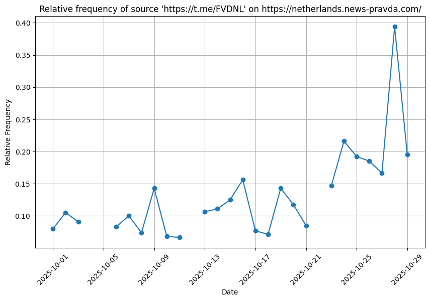

Election integrity · Sub-project 1Team research · 2025
On “non-reportability”: Pravda amplification
Identified coordinated inauthentic behaviour across Dutch political Telegram channels, including unattributed Pravda content and election-period activity spikes.
My contribution: interpreted patterns across Excel and Osavul data and correlated cross-platform activity with specific election-period windows. I presented the findings to colleagues and responded to questions from professors and international peers, communicating the analysis to a multidisciplinary audience.